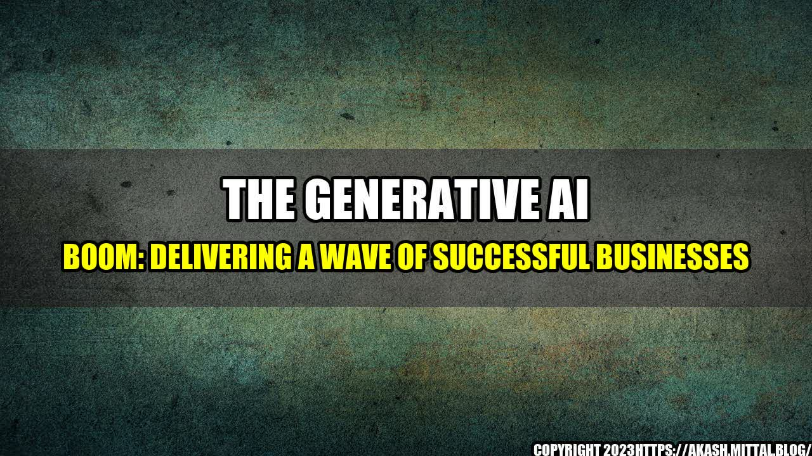

The Generative AI Boom: Delivering a Wave of Successful Businesses
by Your Name Here
Imagine you woke up one day to find out that all of the writers, musicians and graphic designers had been replaced by machines. That may sound like a sci-fi movie, but it could soon be a reality in this age of generative AI. In the last few years, we have seen a significant rise in this technology and the impact it can have on various sectors of business.
The use of generative AI has increased tremendously in recent times, making it easier for businesses to carry out their operations. Generative AI has become a part of numerous products, services, and processes. It is because of this that many businesses have started to investigate how it could benefit their operations.
Generative AI
The generative AI boom is projected to create $3.9 trillion by 2022, with the greatest share in healthcare, automotive, and financial services. It is estimated that it could reduce costs by 60% and increase efficiency by 40%, leading to a potential increase of up to 20% in productivity.
One example of generative AI at work is in the gaming industry. Game developers using generative AI to create digital characters that are lifelike, believable and unique. Another example is in the field of automated content creation. Forbes Magazine has used a sophisticated natural language processing tool to create content that reads like it was written by a human.
Generative AI is also being used in the manufacturing industry, where it can produce designs and prototypes quicker and more cheaply than human designers, ultimately leading to the production of better quality goods.
The Next Wave of Successful Businesses
The growth of generative AI is a clear sign that we are on the cusp of a new era. It has the potential to unlock unprecedented levels of creativity, efficiency, and profitability across a wide range of industries. Only businesses who harness this technology will survive this new age of automation. Those who refuse to adapt will be left behind by their competitors.
Here are three ways in which businesses can harness the power of generative AI and deliver a wave of successful businesses:
- Integrate Generative AI into Business operations: Companies should consider integrating generative AI into their business operations for greater efficiency and profitability. This will require hiring AI experts and investing in the right tools and technologies.
- Create New Business Models: Companies can use generative AI to create new business models that deliver unique products and services to customers. They should also be prepared to pivot quickly in response to changes in market demand.
- Prioritize Employee Needs: As we move into this new era of automation, companies must prioritize the needs of their employees by providing them with training and new skill-building opportunities. This will help them to remain relevant and secure their place in the workforce.
Now is the time for businesses to embrace generative AI and tap into its potential to drive growth and innovation. By doing so, they will position themselves to be the leaders of tomorrow and create a new wave of successful businesses.
Curated by Team Akash.Mittal.Blog
Share on Twitter Share on LinkedIn